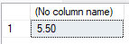
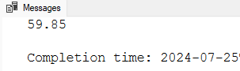

Cómo crear procedimientos que reciben datos de entrada y devuelven un valor calculado o consultado mediante parámetros OUTPUT, sin depender de un conjunto de resultados.
Un procedimiento almacenado con parámetros de salida en SQL Server es un conjunto de instrucciones SQL precompiladas que puede aceptar parámetros de entrada y devolver valores a través de parámetros de salida.
OUTPUT al final. Luego, dentro de la lógica del procedimiento, se asigna el valor que se desea retornar con SET o SELECT @variable = ....
Se declara junto al tipo de dato y permite que el procedimiento devuelva un valor al código que lo invoca.
SP_Promedio calcula el promedio de dos números y lo devuelve por un parámetro de salida.
SP_GetCotizacion consulta MonedasCotizaciones y retorna la cotización de una moneda en una fecha.
Declarás una variable, ejecutás el procedimiento y mostrás el resultado con SELECT o PRINT.
@nombre TipoDato.@nombre TipoDato OUTPUT.Todo procedimiento con parámetros de salida sigue el mismo esquema: declaración del procedimiento, parámetros de entrada, parámetro OUTPUT y lógica interna que asigna el valor de retorno.
CREATE PROCEDURE NombreProcedimiento @ParametroEntrada TipoDato, @ParametroSalida TipoDato OUTPUT AS BEGIN -- Lógica del procedimiento SET @ParametroSalida = Valor END
| Parte | Qué hace |
|---|---|
| CREATE PROCEDURE | Comando para crear el procedimiento en la base de datos. |
| @ParametroEntrada | Recibe el dato que necesita el procedimiento para trabajar. |
| OUTPUT | Indica que ese parámetro devolverá un valor al finalizar la ejecución. |
| SET / SELECT @var = | Asigna el valor que el procedimiento va a retornar. |
Comando para crear el procedimiento.
Identificador con el que luego lo vas a ejecutar.
Datos que recibe desde afuera.
Variable de retorno declarada con la palabra OUTPUT.
Cálculos, consultas y asignación del valor de salida.
Este primer ejemplo calcula el promedio de dos números y lo devuelve mediante un parámetro de salida. Es útil para entender el mecanismo sin depender todavía de tablas.
CREATE PROCEDURE SP_Promedio ( @n1 numeric(10,2), @n2 numeric(10,2), @resultado numeric(10,2) OUTPUT ) AS BEGIN SET @resultado = (@n1 + @n2) / 2; END
Primero declarás una variable para almacenar el dato retornado. Luego ejecutás el procedimiento con EXEC o EXECUTE, pasando los parámetros de entrada y la variable como parámetro de salida. Para ver el resultado usás SELECT o PRINT.
DECLARE @salida numeric(10,2) EXECUTE SP_Promedio @n1 = 5, @n2 = 6, @resultado = @salida OUTPUT SELECT @salida;

OUTPUT también se escribe al pasar la variable receptora: @resultado = @salida OUTPUT.Ahora el procedimiento consulta una tabla real. Obtiene desde MonedasCotizaciones la cotización de una moneda en una fecha específica, recibiendo el id de moneda y la fecha como entrada y devolviendo la cotización como salida.
CREATE PROCEDURE SP_GetCotizacion ( @idmoneda int, @fecha datetime, @cotizacion numeric(10,2) OUTPUT ) AS BEGIN SELECT @cotizacion = cotizacion FROM MonedasCotizaciones WHERE fecha = @fecha AND idMoneda = @idmoneda END
DECLARE @cot_output numeric(10,2) EXEC SP_GetCotizacion @idmoneda = 2, @fecha = '20200102', @cotizacion = @cot_output OUTPUT PRINT @cot_output

PRINT @cot_output: en este caso, 59.85.NULL.Repaso rápido de la estructura, la creación y la ejecución de un procedimiento almacenado con parámetros de salida.
CREATE PROCEDURE con nombre y parámetros.OUTPUT al parámetro que devolverá el valor.SET o SELECT @var = columna.EXEC o EXECUTE.OUTPUT.SELECT @variable o PRINT @variable.-- Creación CREATE PROCEDURE SP_GetCotizacion ( @idmoneda int, @fecha datetime, @cotizacion numeric(10,2) OUTPUT ) AS BEGIN SELECT @cotizacion = cotizacion FROM MonedasCotizaciones WHERE fecha = @fecha AND idMoneda = @idmoneda END -- Ejecución DECLARE @cot_output numeric(10,2) EXEC SP_GetCotizacion @idmoneda = 2, @fecha = '20200102', @cotizacion = @cot_output OUTPUT SELECT @cot_output
Un repaso corto para verificar que entendiste la diferencia entre parámetros de entrada y salida, y cómo ejecutar un procedimiento que devuelve un valor.